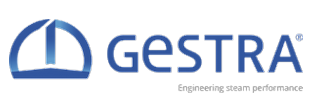

Xuất xứ: Đức
GESTRA là nhà sản xuất thiết bị hệ thống hơi của Đức: bẫy hơi (steam trap), thiết bị điều khiển và an toàn lò hơi, van một chiều, van điều khiển, van chặn, bộ lọc đường ống và các hệ thống trọn gói cho nhà máy dùng hơi.
Fast Group Engineering cung ứng thiết bị GESTRA chính hãng tại Việt Nam — hỗ trợ tính chọn bẫy hơi theo lưu lượng nước ngưng và chênh áp thực tế, đọc nameplate, tra part number, cung cấp datasheet và báo giá cho nhà máy nhiệt điện, lọc hoá dầu, đạm, thực phẩm và dệt nhuộm.
Fast Group vận hành website chuyên ngành riêng cho thương hiệu này: tra cứu toàn bộ các dòng bẫy hơi GESTRA theo nguyên lý hoạt động — phao UNA, lưỡng kim BK, màng MK, nhiệt động DK, kèm trang riêng cho từng model.
Tra cứu thêm thông số & part number: gestra.com.vn
Ví dụ một model cụ thể: bẫy hơi phao UNA 46A — PN 16/PN 40, ASME Class 150/300/3000, DN 15 và DN 40, ΔPMX 15 bar.
GESTRA được ông Gustav Friedrich Gerdts sáng lập ngày 29/10/1902 tại Bremen (Đức), thời điểm nền công nghiệp hơi nước mới bắt đầu định hình. Công ty mang tên Gustav F. Gerdts KG từ năm 1907 và phát triển thành một trong những tên tuổi lâu đời nhất thế giới về kỹ thuật hơi, với hơn một thế kỷ kinh nghiệm.
Năm 2017, GESTRA gia nhập tập đoàn Spirax Sarco Engineering PLC (Spirax Group), đồng thời mở rộng các văn phòng khu vực tại Đông Nam Á, Ấn Độ và Mỹ Latinh. Trụ sở và nhà máy chính vẫn đặt tại Bremen.
Giá trị thực tế mà GESTRA mang lại nằm ở chỗ ít ai để ý: trong một nhà máy dùng hơi, bẫy hơi hỏng là khoản thất thoát âm thầm và tốn kém nhất. Một bẫy hơi kẹt mở xả hơi sống liên tục suốt năm mà không ai biết, vì hệ thống vẫn chạy bình thường. Vì vậy GESTRA phát triển song song cả thiết bị lẫn công cụ giám sát để phát hiện bẫy hỏng trước khi hoá đơn nhiên liệu phản ánh điều đó.
GESTRA chia danh mục theo vai trò trong hệ thống hơi: xả nước ngưng, điều khiển và bảo vệ lò hơi, chặn và một chiều, điều tiết, lọc, và hệ thống trọn gói. Bảng dưới tóm tắt các nhóm chính Fast Group cung ứng tại Việt Nam, kèm ký hiệu dòng để đối chiếu với nameplate và bản vẽ P&ID.
| Nhóm thiết bị | Dòng / Ký hiệu | Nguyên lý & đặc điểm | Vị trí trong hệ thống |
|---|---|---|---|
| Bẫy hơi | UNA · BK · MK · DK · GK/TK · SMK · AK | UNA phao kín — xả liên tục, chịu tải biến động. BK lưỡng kim — bền, chịu áp cao. MK màng cân bằng áp — xả sát nhiệt bão hoà. DK nhiệt động — gọn, hợp đường ống hơi | Chân ống hơi, thiết bị trao đổi nhiệt, nồi nấu, sấy |
| Giám sát bẫy hơi | VK / VKE · VKP · MSB | Kính quan sát và đầu dò phát hiện bẫy kẹt mở hoặc kẹt đóng | Lắp trước bẫy hơi hoặc tích hợp để khảo sát định kỳ |
| Điều khiển mức nước lò hơi | NRG / NRGS / NRGT · NRR · NRS · SRL | Điện cực đo mức và bộ điều khiển; bản giới hạn mức đạt yêu cầu an toàn | Bao hơi, bình chứa nước cấp |
| Kiểm soát TDS & xả đáy | LRG / LRGT / LRGS · LRR · PA / MPA · BA / BAE | Đo độ dẫn điện nước lò, điều khiển van xả liên tục và van xả đáy định kỳ | Bao hơi, tuyến xả đáy và xả bề mặt |
| Nền tảng SPECTOR | SPECTORcompact · SPECTORmodul · SPECTORconnect · SPECTORcontrol | Hệ điều khiển và giám sát phòng lò hơi, kết nối lên hệ thống giám sát nhà máy | Tủ điều khiển lò hơi |
| Van một chiều | RK · BB DISCOCHECK · CB | Kiểu đĩa lò xo, kiểu hai cánh kẹp giữa mặt bích, kiểu cánh lật | Đầu đẩy bơm, tuyến nước ngưng, đường hơi |
| Van điều khiển | GCV · ZK (severe service) · CW · BW | Van điều tiết quá trình; dòng ZK cho điều kiện khắc nghiệt chênh áp lớn | Trạm giảm áp, điều tiết nhiệt độ, nước làm mát |
| Van chặn & bộ lọc | GAV 6 · GBV / BVA · SZ 36A | Van chặn thân mang xếp kín tuyệt đối, van bi, lọc chữ Y | Cách ly thiết bị, bảo vệ bẫy hơi và van khỏi cặn bẩn |
| Hệ thống trọn gói | FPS / MFP / SDL · KDL / KDS · PK 40 | Thu hồi nước ngưng, bơm nước ngưng không dùng điện, giảm ôn hơi, làm mát mẫu | Cụm thu hồi nước ngưng, trạm giảm áp giảm ôn |
Xem thêm nhóm thiết bị điều khiển và an toàn lò hơi GESTRA, trang model cụ thể như bẫy hơi lưỡng kim BK 45, hoặc tải trực tiếp datasheet và hướng dẫn lắp đặt trong thư viện tài liệu kỹ thuật GESTRA.
Bẫy hơi trên đường hơi chính và ống góp, điều khiển mức bao hơi, giới hạn mức an toàn và kiểm soát TDS. Nhóm thiết bị an toàn ở đây phải đạt yêu cầu SIL và nằm trong hồ sơ kiểm định định kỳ của nồi hơi.
Hệ hơi quy mô lớn nhiều cấp áp suất, nhiều tuyến nước ngưng thu hồi. Ưu tiên bẫy hơi chịu áp cao và chênh áp lớn, cùng van chặn thân mang xếp cho môi chất không cho phép rò rỉ ra ngoài.
Nồi nấu, thanh trùng, tiệt trùng — yêu cầu xả nước ngưng nhanh và ổn định để giữ nhiệt độ mẻ. Các tuyến SIP/CIP cần dòng bẫy hơi chuyên dụng cho hơi sạch.
Máy sấy, lô sấy, buồng nhuộm — tải nước ngưng biến động mạnh theo mẻ sản xuất, phù hợp bẫy hơi kiểu phao xả liên tục thay vì kiểu xả ngắt quãng.
Nồi hấp lưu hoá, thiết bị gia nhiệt gián tiếp. Thu hồi nước ngưng về lò hơi giúp giảm nhiên liệu và giảm lượng nước cấp phải xử lý hoá chất.
Khảo sát bẫy hơi định kỳ để tìm bẫy kẹt mở đang xả hơi sống. Đây thường là hạng mục có thời gian hoàn vốn ngắn nhất trong các dự án tiết kiệm năng lượng của nhà máy dùng hơi.
Bốn nguyên lý giải bốn bài toán khác nhau. Phao xả liên tục, bám sát tải biến động — hợp thiết bị trao đổi nhiệt và quá trình theo mẻ. Lưỡng kim bền, chịu áp và va đập thuỷ lực tốt, nhưng xả nước ngưng đã nguội dưới nhiệt bão hoà. Màng cân bằng áp xả sát nhiệt bão hoà, gọn, hợp tuyến truy nhiệt và thiết bị nhỏ. Nhiệt động đơn giản và gọn nhất, hợp đường ống hơi ngoài trời, nhưng không phù hợp tải thấp hay chênh áp nhỏ.
Đây là lỗi phổ biến nhất: lắp bẫy hơi cùng cỡ với ống nối. Cỡ đúng phải tính từ lưu lượng nước ngưng ở chế độ nặng nhất — thường là lúc khởi động nguội, có thể gấp vài lần chế độ ổn định — nhân với hệ số an toàn khởi động — thông lệ là ×2 cho vận hành liên tục và ×3 cho hệ khởi động/dừng thường xuyên hoặc có van điều khiển nhiệt độ — và từ chênh áp thực tế qua bẫy, tính cả áp ngược do cột nước ngưng nâng lên và áp trong đường hồi, chứ không lấy bằng 0. Bẫy quá nhỏ gây ngập nước ngưng làm giảm công suất thiết bị; bẫy quá lớn gây mài mòn nhanh và lọt hơi.
Bộ giới hạn mức nước thấp và bộ giới hạn nhiệt độ là thiết bị bảo vệ: khi hỏng, hậu quả là cạn nước và nổ lò. Vì vậy chúng được thiết kế theo yêu cầu an toàn chức năng với mức SIL tương ứng, có tự giám sát và phải được kiểm tra định kỳ. Khi thay thế, phải giữ nguyên cấp an toàn của thiết bị cũ và lưu chứng chỉ trong hồ sơ kiểm định nồi hơi.
Một bẫy hơi kẹt mở vẫn để hệ thống chạy bình thường, chỉ khác là hơi sống thoát thẳng về đường nước ngưng suốt ngày đêm. Không có cảnh báo, không có sự cố dừng máy — chỉ có nhiên liệu tăng. Nhà máy nên có chu kỳ khảo sát bẫy hơi bằng thiết bị siêu âm hoặc nhiệt độ, hoặc lắp sẵn thiết bị giám sát tại các vị trí quan trọng, thay vì đợi đến khi phát hiện bằng cảm quan.
Các dòng bẫy hơi thông dụng ở cỡ và vật liệu tiêu chuẩn thường có thời gian ngắn hơn. Thiết bị điều khiển lò hơi, bộ giới hạn an toàn và van điều khiển cấu hình riêng cần đặt theo đơn, thời gian phụ thuộc cấu hình và lịch sản xuất tại nhà máy Bremen.
Với công tác đại tu có mốc thời gian cố định, nên chốt danh mục sớm và tách đơn: phần vật tư tiêu hao và phụ tùng bẫy hơi đi trước, phần thiết bị cấu hình riêng đi sau. Fast Group xử lý trọn gói khâu nhập khẩu và thông quan — xem chi tiết dịch vụ nhập khẩu & logistics và hỗ trợ kỹ thuật sau bán hàng.
Fast Group Engineering cung ứng thiết bị GESTRA chính hãng tại Việt Nam và vận hành website chuyên ngành gestra.com.vn một cách độc lập nhằm hỗ trợ tra cứu, tư vấn kỹ thuật và báo giá. GESTRA là thương hiệu của GESTRA AG, thuộc Spirax Sarco Engineering PLC. Chúng tôi hỗ trợ tính chọn thiết bị, cung cấp tài liệu kỹ thuật và xử lý nhập khẩu kèm đầy đủ chứng từ theo lô hàng.
Tuỳ ứng dụng. Kiểu phao xả liên tục và bám tải biến động tốt — hợp thiết bị trao đổi nhiệt. Kiểu lưỡng kim bền, chịu áp cao và va đập thuỷ lực. Kiểu màng cân bằng áp xả sát nhiệt bão hoà, gọn. Kiểu nhiệt động đơn giản nhất, hợp đường ống hơi nhưng kém ở tải thấp. Xem phân tích chi tiết so sánh bẫy hơi phao, lưỡng kim và nhiệt động.
Không. Đây là lỗi phổ biến nhất khi mua bẫy hơi. Cỡ đúng tính từ lưu lượng nước ngưng thực tế, nhân hệ số an toàn khởi động (thông lệ ×2 khi vận hành liên tục, ×3 khi khởi động/dừng thường xuyên), rồi tra đường đặc tính lưu lượng của đúng model tại chênh áp thực tế — lưu ý kiểm tra ΔPMX của bộ điều tiết đi kèm. Bẫy quá nhỏ làm ngập nước ngưng và giảm công suất thiết bị; bẫy quá lớn mài mòn nhanh và lọt hơi. Xem hướng dẫn cách tính chọn cỡ bẫy hơi.
Bẫy hơi hỏng không gây dừng máy nên rất khó phát hiện bằng cảm quan. Bẫy kẹt mở xả hơi sống liên tục làm tăng nhiên liệu; bẫy kẹt đóng gây ngập nước ngưng, giảm công suất thiết bị và có nguy cơ va đập thuỷ lực. Cách phát hiện là khảo sát định kỳ bằng thiết bị siêu âm hoặc đo nhiệt độ, hoặc lắp sẵn thiết bị giám sát tại các vị trí quan trọng.
Gửi ảnh chụp thiết bị và phần nameplate còn đọc được, kèm thông tin vị trí lắp: áp suất làm việc, kiểu kết nối và cỡ đường ống, môi chất. Với bẫy hơi, thêm mô tả thiết bị phía trước (nồi, trao đổi nhiệt hay đường ống) là đủ để xác định dòng phù hợp. Chúng tôi đối chiếu và đề xuất mã thay thế, kèm lưu ý nếu dòng cũ đã ngừng sản xuất.
Có. Tài liệu chính hãng cho từng dòng — datasheet, hướng dẫn lắp đặt vận hành, tuyên bố hợp chuẩn — được tập hợp trong thư viện tài liệu trên website chuyên ngành, tải trực tiếp không cần đăng ký. Nếu cần bản cho một model cụ thể chưa có sẵn, liên hệ qua trang liên hệ hoặc gọi (+84) 938 888 958.
Gửi part number, ảnh nameplate hoặc thông số vị trí lắp — Fast Group hỗ trợ tính chọn, báo giá, nhập khẩu và chứng từ.